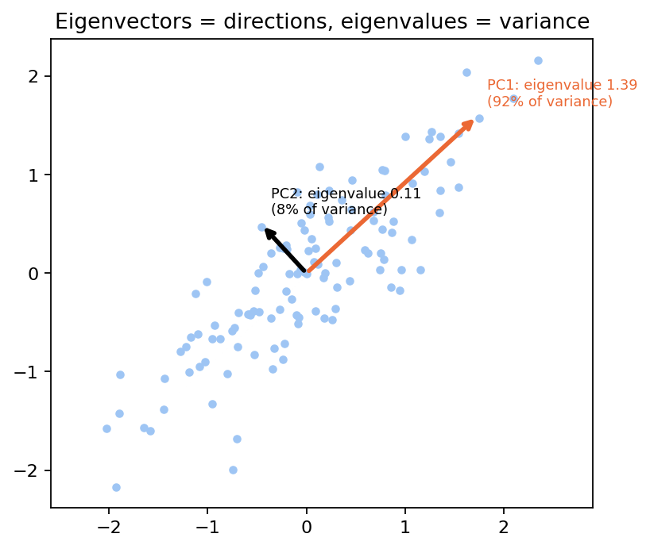
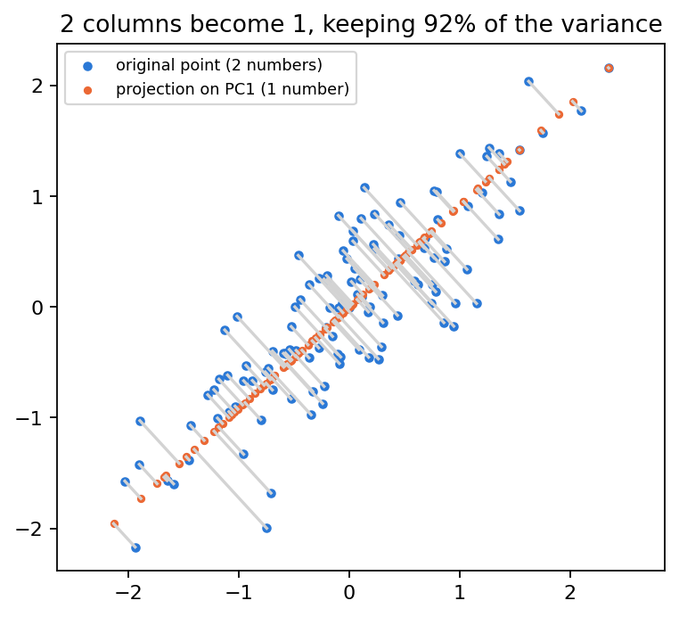
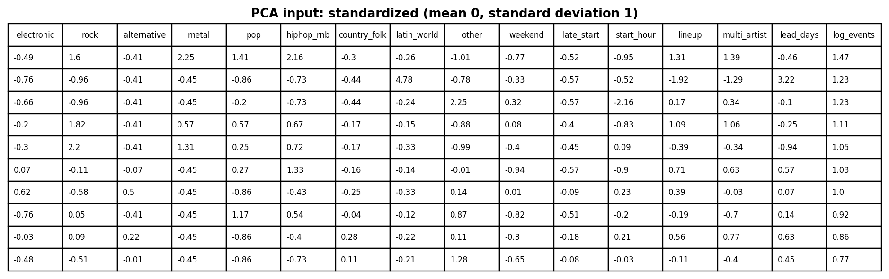
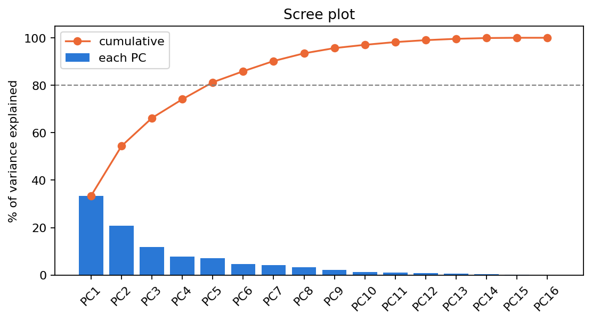
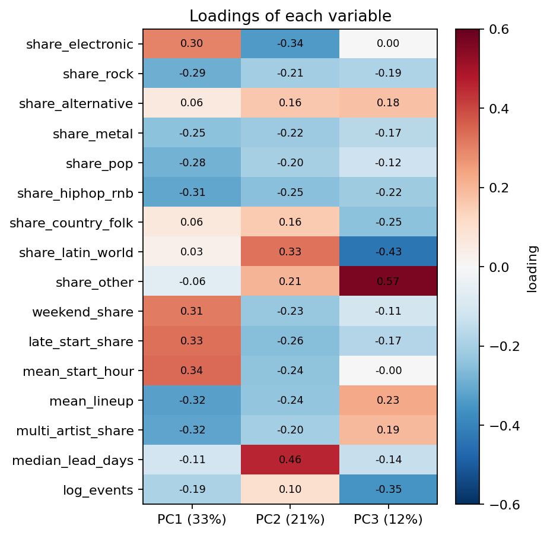
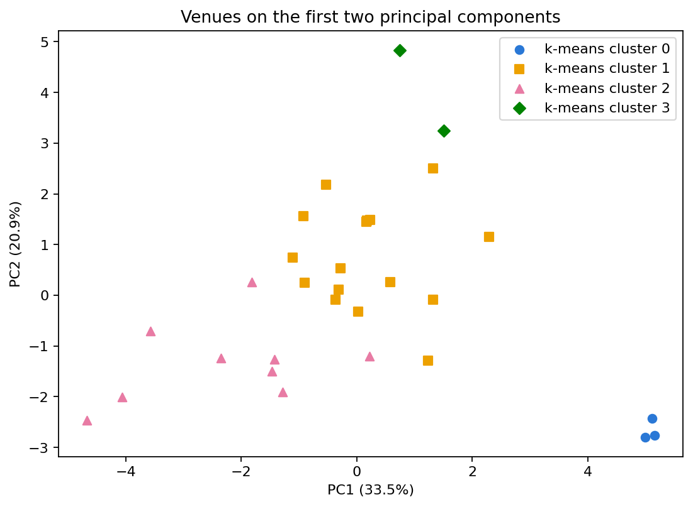

Principal Component Analysis
How many independent ideas do the 16 venue numbers contain?
Overview
Principal Component Analysis (PCA) replaces many correlated columns with a few new, uncorrelated columns called principal components. PC1 is the direction in which the data varies the most, PC2 is the direction of most remaining variation perpendicular to PC1, and so on.
Eigenvalues and eigenvectors are the heart of PCA. An eigenvector of a matrix C is a direction that C only stretches: Cv = λv, where λ is the eigenvalue. PCA uses the covariance matrix of the standardized data: its eigenvectors are the directions of the principal components, and each eigenvalue is the variance along that direction, so a bigger eigenvalue means a more important component (Figure 1). The same result can be obtained from the singular value decomposition (SVD) of the data, which is how the software computes it.

Dimensionality reduction means describing each row with fewer numbers while keeping most of the information: keep the first few components and drop the rest (Figure 2). This simplifies analysis, because correlated columns repeat the same information, and it makes visualization possible, because people can only look at two or three axes. High-dimensional data is hard to work with: it cannot be plotted, the rows become sparse so models need much more data, and distances between rows become less meaningful, which hurts methods such as k-means. Reducing the dimension helps with all three.

Data Prep
PCA needs numeric, unlabeled data, and the columns must be standardized (mean 0, standard deviation 1), because PCA follows variance and a column with big numbers would take over. The data is the same 30 × 16 venue table used on the Clustering tab, after standardizing (Figure 3).

- Sample of the PCA data: exports/module2/venue_features_standardized.csv
- Before scaling: exports/module2/venue_features.csv
Code
- pca.py — standardizing, PCA, eigenvalues, loadings and the figures below
X = StandardScaler().fit_transform(df)
pca = PCA(random_state=42)
scores = pca.fit_transform(X)
eigenvalues = pca.explained_variance_
ratio = pca.explained_variance_ratio_
loadings = pca.components_ #the eigenvectorsResults
| Component | Eigenvalue | % of variance | Cumulative |
|---|---|---|---|
| PC1 | 5.54 | 33.5% | 33.5% |
| PC2 | 3.46 | 20.9% | 54.4% |
| PC3 | 1.96 | 11.8% | 66.2% |
| PC4 | 1.31 | 7.9% | 74.1% |
| PC5 | 1.19 | 7.2% | 81.3% |
The first two components keep 54% of the variance and the first five keep 81%, so the 16 columns can be reduced to about 5 components (Figure 4).

The loadings (the eigenvectors) show how each original variable relates to each component (Figure 5):
- PC1 (33.5%): late start, weekend and electronic (positive) against many artists per bill, rock, pop, metal and hip-hop (negative). It separates club nights from concerts.
- PC2 (20.9%): long on-sale lead time and Latin (positive) against electronic and late starts (negative). It separates venues that plan far ahead from short-notice nightlife.


Conclusions
The way Colorado venues program comes down to a few ideas: five components keep 81% of the information in 16 columns. The most important one is not a genre but a format, club night versus concert. Rock, metal, pop and hip-hop move together with bigger bills, while electronic moves with late weekend starts, so genre and format are closely tied in this market. The PCA scores give a smaller, uncorrelated description of each venue that later models can use.